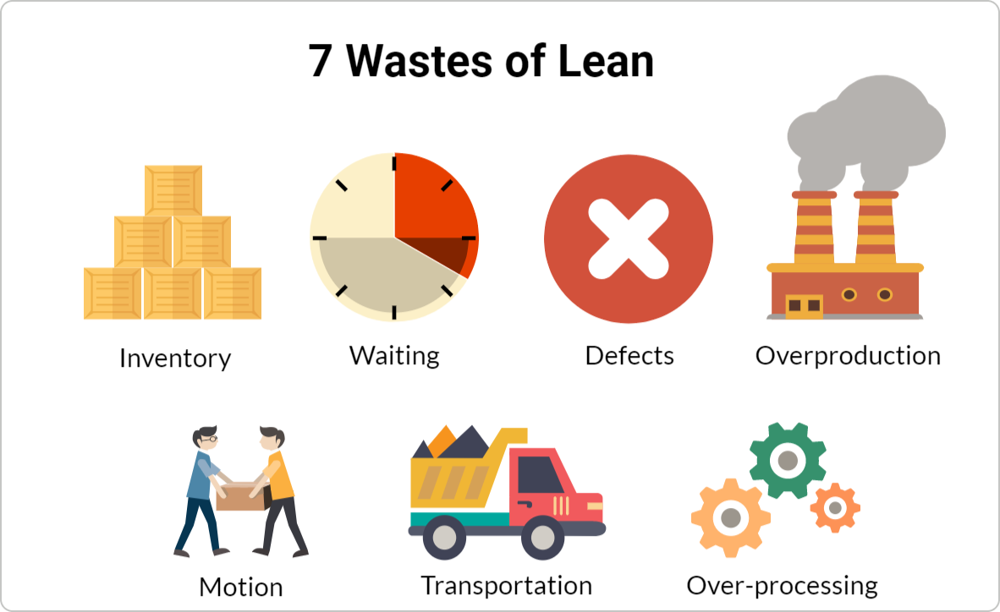

APE 100 Website
Created By Prapaporn Masuan
The 7 wastes of Lean Manufacturing

https://kanbanize.com/wp-content/uploads/website-images/kanban-resources/7-wastes-lean.png
1. Transportation
This type of waste is when you move resources (materials), and the movement doesn’t add value to the product. Excessive movement of materials can be costly to your business and cause damage to quality. Often, transportation may force you to pay additionally for time, space, and machinery.
2. Inventory
Excessive inventory is often the result of a company holding “just in case” inventories. In such cases, companies overstock themselves in order to meet unexpected demand, protect from production delays, low quality, or other problems. However, these excessive inventories often don’t meet customer’s needs and don’t add value. They only increase storage and depreciation costs.
3. Motion
This kind of waste includes movements of employees (or machinery), which are complicated and unnecessary. They can cause injuries, extended production time, and more. In other words, do whatever is necessary to arrange a process where workers need to do as little as possible to finish their job.
4. Wait
This is probably the easiest waste you can recognize. Whenever goods or tasks are not moving, the "waiting waste" occurs. It is easily identifiable because lost time is the most obvious thing you can detect. For example, goods waiting to be delivered, equipment waiting to be fixed, or a document waiting for executives' approval.
5. Overproduction
Keeping in mind that waste is anything that the customer is unwilling to pay for, it is easy to realize why overproduction is Muda. Producing more means that you exceed customer’s demand, which leads to additional costs. Actually, overproduction triggers the other 6 wastes to appear. The reason is that excess products or tasks require additional transportation, excessive motion, greater waiting time, and so on. Furthermore, if occasionally a defect appears during overproduction, it means your team will need to rework more units.
6. Over-processing
This type of waste usually reflects on doing work that doesn’t bring additional value, or it brings more value than required. Such things can be adding extra features to a given product that nobody will use, but they increase your business costs. For example, if a car manufacturer decides to put a TV screen in the back trunk of a vehicle, probably nobody will use it or find value in it. Even more, it will cost resources, and it will increase the end price of the product for something that customers are not willing to pay for.
7. Defects
Defects can cause rework, or even worse, they can lead to scrap. Usually, defective work should go back to production again, which costs valuable time. Moreover, in some cases, an extra reworking area is required, which comes with additional exploitation of labor and tools.